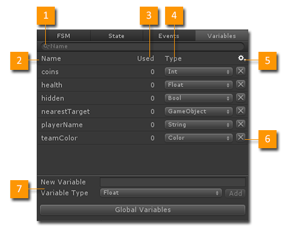
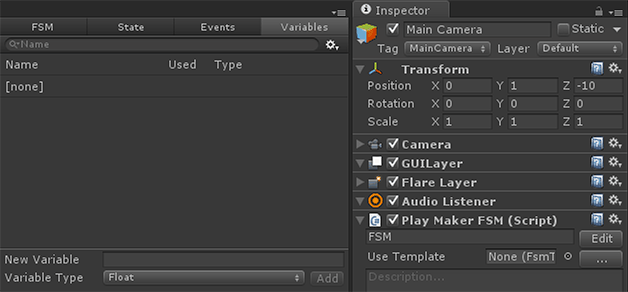
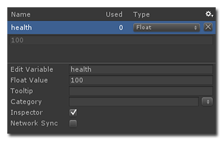
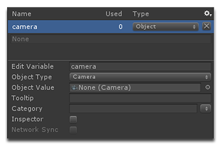

The Variables Manager lets you add, delete, and edit the variables used by an FSM.

- Search Filter: Filter the Variables list to find variables.
- Variable Name: Descriptive name for the variable.
- Usage Count: The number of times the variable is used in the FSM.
- Variable Type: The variable type. See FSM Variables.
- Settings Menu: See below.
- Delete: Delete a variable.
- Variable Editor: Add or Edit Variables.
Settings Menu
- Debug Variable Values: Show variable values. Great for runtime debugging.
- Delete Unused Variables: Delete any variables that are not used by this FSM.
- Global Variables: Open the Global Variables Window.
- Copy Variables: Copy all variables from the FSM.
- Paste Variables: Paste previously copied variables into an FSM.
- Paste Variables Values: Paste variable values into an FSM.
- Online Help: A link to this document.
Adding a New Variable
- New Variable: Enter the name for the new variable.
- Variable Type: Set the type for the new variable.
- The new variable is auto-selected so you can edit it further. See below.
NEW You can also drag and drop Components and GameObjects into the panel to create new variables:

Editing a Variable
- Select the variable in the table.
- Use the panel at the bottom to edit the variable:

- Edit Variable: Set the variable's name.
- Value: Set the default value for the variable.
- Tooltip: Set the tooltip that will show when mousing over the variable.
- Category: Set the category that the variable should use. Categories are useful to organize lots of variables.
- Inspector: Show the variable in the FSM Inspector as well as Run FSM actions.
- Network Sync: Should this variable be automatically synced over the Network. Not available for all types.
NOTE: Enum, Object, and Array variables also require you to set the specific type to use.
For example an Object variable requires an Object Type:

Note that Network Sync in disabled since Unity Objects cannot be synced over the network.
HINTS:
- The Object Type selection menu is organized by namespace. Many standard components are under UnityEngine. Most third party scripts use their own namespace, making their types easier to find.
- Type letters to quickly navigate the Object Type Selection menu.
Organizing By Category
NEW In 1.8.0, you can now organize variables into Categories:
- Select the variable
- Type a Category or select an existing category from the popup.
- The variable will now be listed in that category.

NOTE: Categories are also used in the FSM Inspector tab and PlayMakerFSM Inspector.
Finding Variables in Actions
Right click on a variable name to find states/actions that use the variable.